← 返回首页
VLA / 策略架构 · 9
3.90 VLA / 策略架构 π系列 VLA 2611.03163
FineCraft采用按任务路由的策略混合框架：在瓶体部位抓取和字母插入任务中使用DINOv2提取局部视觉特征并由DiT生成动作，在杯子搬运、开关切换和方块排序任务中以LoRA微调预训练π0.5，并通过新观测持续重规划。该方法在MetaFine五项任务中以0.878的总分排名第4，五项任务均超过π0参考的0.430均分，整体提升44.8个百分点；其中杯子搬运得分1.000，方块排序0.987，开关切换0.925。
📐 查看论文原版模型结构图与讲解（Figure 1） 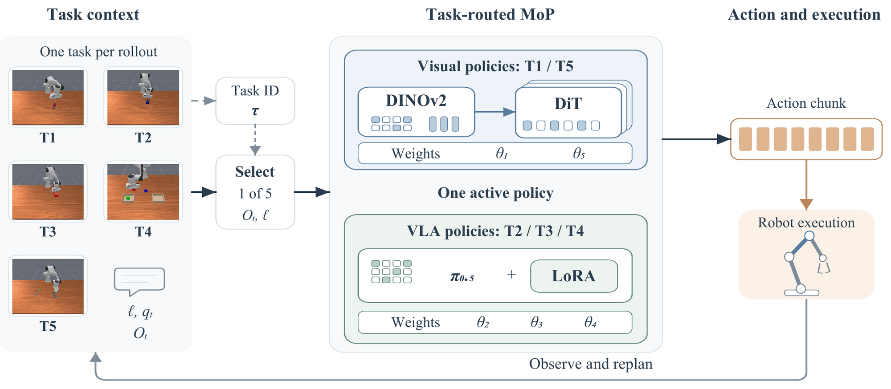
输入与任务路由（Task Routing） ：每回合重置时，已知任务 ID $\tau\in\{1,\ldots,5\}$ 以 one-hot 门控选择独立策略 $\pi_{\theta_\tau}$。输入为指令 $\ell$ 与历史 $\mathcal O_t$；单帧观测 $o_t=(I_t^{\mathrm{base}},I_t^{\mathrm{wrist}},q_t)$，含两幅 $512\times512$ RGB 图像及九维关节位置。双骨干与任务分支（Two Backbone Families） ：五个任务被归入两类骨干并保留 task-specific branches。T1/T5 由 DINOv2 提取双视角空间特征，Heatmap/Visibility Heads 输出关键点及置信度；指令进一步选择 T1 的 cap/body 分支或 T5 的目标字母分支。特征融合与动作生成（DiT Policy） ：预测视觉特征、$q_t$、历史动作及目标 one-hot 在两帧窗口内融合；T1 还汇聚瓶盖中心与夹爪邻域特征。Diffusion Transformer 对高斯噪声动作块迭代去噪，生成 $\mathbf A_t=(a_t,\ldots,a_{t+H-1})$，其中 $a_t\in\mathbb R^8$ 控制七个机械臂关节和夹爪。执行与闭环重规划（Replanning） ：MoP 为硬路由 $\pi_{\mathrm{MoP}}=\sum_{k=1}^5\mathbf1[\tau=k]\pi_{\theta_k}$；每次仅产生一条动作流，执行前 $K\le H$ 步后获取新观测并重规划。T2/T4 取 $H=K=10$，T3 取 $H=10,K=5$。进入深读卡片查看完整方法与千问问答 →
3.89 VLA / 策略架构 π系列 VLA 2611.01215
JADE（Joint Action DEnoiser）让预训练VLM在每个去噪步骤读取由冻结OAT编码器生成的当前噪声动作潜变量，并通过门控交叉注意力动态指导流式动作专家，而非仅提供静态视觉语言条件。其3项核心设计是噪声动作潜变量输入、从噪声潜变量预测干净动作潜变量的对齐监督，以及减少采样步数并采用自适应步长；训练联合使用流匹配损失与SmoothL1对齐损失。实验称其在RoboTwin 2.0、RoboDojo及4个真实世界双臂任务上持续优于π0.5基线，但所给节选未提供具体成功率、提升幅度或去噪步数。
📐 查看论文原版模型结构图与讲解（Figure 1） 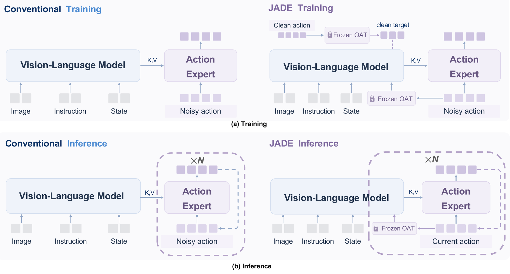
训练输入与动作加噪 ：多模态观测 $o_t$（图像、语言指令与机器人状态）输入 VLM；真实动作块 $\mathbf A\in\mathbb R^{H\times D}$ 经流匹配插值得到 $\mathbf A_\tau=(1-\tau)\mathbf A+\tau\boldsymbol\epsilon$，其中 $\boldsymbol\epsilon\sim\mathcal N(0,I)$。冻结 OAT 动作编码器 ：Frozen OAT Encoder 分别将噪声动作与干净动作的物理维度编码为紧凑连续寄存器：$\mathbf Z_\tau=E_{\mathrm{OAT}}(\mathbf A_\tau^{\mathrm{phys}})$、$\mathbf Z_0=E_{\mathrm{OAT}}(\mathbf A^{\mathrm{phys}})\in\mathbb R^{M\times d_z}$；前者作为 VLM 输入，后者作为训练目标，使视觉语言表征显式感知当前动作。联合训练与速度预测 ：VLM 根据 $o_t$ 和 $\mathbf Z_\tau$ 生成动作条件，并传给连续 Action Expert；专家预测速度场 $v_\Theta(\mathbf A_\tau,\tau,o_t)$，回归目标为 $\boldsymbol\epsilon-\mathbf A$，同时 VLM 学习由噪声动作潜变量恢复干净潜变量。推理时联合去噪 ：从 $\mathbf A_1\sim\mathcal N(0,I)$ 出发，每一步都将当前 $\mathbf A_\tau$ 重新送入冻结 OAT 与 VLM，再以更新后的 VLM guidance 驱动 Action Expert 积分至 $\tau=0$；区别于传统 VLA 的固定条件，JADE 将 VLM 纳入完整 denoising loop。进入深读卡片查看完整方法与千问问答 →
3.83 VLA / 策略架构 π系列 VLA 2611.02101
论文将机器人基础模型的物理安全形式化为环境、模型、计算平台与执行之间的跨层变化传播，并用交互对比量衡量联合扰动产生的超加性风险。在LIBERO-Spatial上对π0.5开展的4,000个配对闭环回合中，400 ms推理延迟在训练视角下仅使安全违规率上升3.5个百分点（4.5%至8.0%），但在60°相机偏移下使其上升37个百分点（21.5%至58.5%），跨层交互达33.5个百分点（95% CI：25–43）。该交互在60°偏移、400 ms延迟时对全部10个任务均为正，表明单独评测视觉鲁棒性或标称场景中的延迟会漏掉主要风险区间。
📐 查看论文原版模型结构图与讲解（Figure 1） 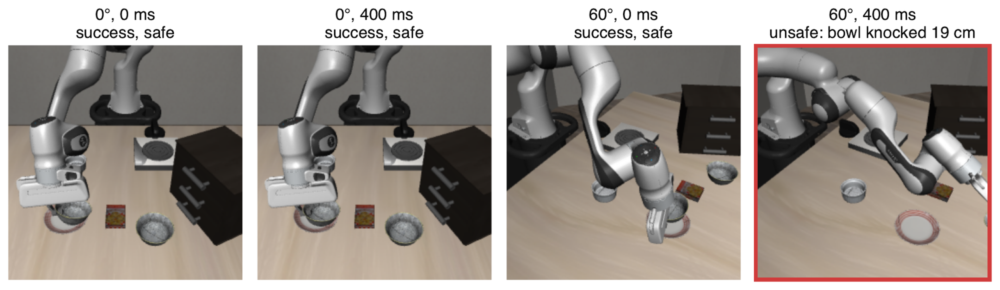
受控输入（Initial State & Sampling Noise） ：四个面板复用同一 LIBERO-Spatial 任务、相同初始状态 $s_0$ 与采样噪声 $\epsilon$，仅改变执行延迟和相机视点，从而排除场景与随机性差异，形成严格的单回合对照。视觉观测（Policy Camera Observation） ：策略始终接收自身相机图像 $o_t=I_t$；Viewpoint Shift（视点偏移）改变成像映射 $I_t=\mathcal{R}(s_t,T_{\mathrm{cam}})$，使相同机器人状态对应不同视觉特征，但单独出现时未破坏任务执行。策略与时延（Policy $\pi_{0.5}$ and Delay） ：策略由当前观测生成动作 $a_t\sim\pi_{0.5}(a\mid o_t)$；Delay（延迟）使动作在 $t+\Delta$ 才作用于环境。单独延迟或单独视点偏移均无害，但二者耦合后造成观测—动作闭环失配。交互结果（Robot–Environment Rollout） ：联合扰动下，错误动作经动力学 $s_{t+1}=f(s_t,a_{t-\Delta})$ 累积，机械臂在 $t=11\,\mathrm{s}$ 横扫桌面，将无关碗击移 $19\,\mathrm{cm}$，并以 $201\,\mathrm{N}$ 压迫桌面；其余面板展示各条件的最终状态。进入深读卡片查看完整方法与千问问答 →
3.80 VLA / 策略架构 π系列 VLA 2611.01390
论文提出路径保持时间缩放（PTS），一种面向冻结动作分块VLA的免训练执行层：通过确定性单步解码、按推理期间已消耗的进度接入新动作块，并以增量求和、夹爪同步和速率限制实现无停顿加速，同时尽量保持模型规划路径不变。在注入推理延迟的LIBERO评测中，PTS相较各模型最强可部署基线将π0.5和SmolVLA的汇总任务吞吐量分别提高33%和104%，且成功率持平或提升；仅时间层相对采用相同单步解码的异步1×执行又分别提升28%和38%。实验覆盖两个VLA、四个LIBERO套件、六种基线及6,160个测试回合；在LIBERO-Dynamic上相对停等执行提升38%，并与异步1×执行相当。
📐 查看论文原版模型结构图与讲解（Figure 4） 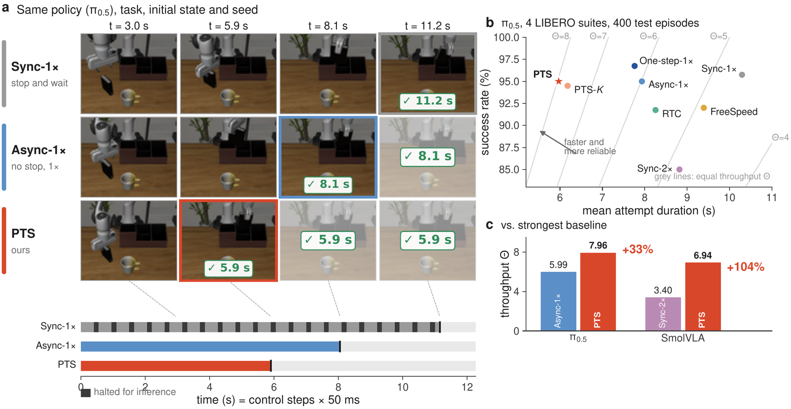
a｜同策略同回合时序对比 ：输入为冻结策略 $\pi_{0.5}$ 在 LIBERO-Long 上生成的同一初态、同一随机种子轨迹；各列按相同墙钟时刻对齐，每步为 $50\,\mathrm{ms}$。Sync-$1\times$ 每次推理均暂停控制，时间轴标出阻塞步；Async-$1\times$ 以异步执行消除停顿，但运动速度仍受示范节奏约束；PTS 同样无停顿，并以更高速度沿已规划路径推进。b｜成功率—耗时权衡 ：在完整 $\pi_{0.5}$ 测试集上，将任务成功率 $P$ 与平均单次尝试时长 $\mathbb{E}[T]$ 联合绘制；灰色等值线对应相同吞吐率 $\Theta=1000P/\mathbb{E}[T]$，因此越靠近高成功率、低耗时区域，部署效率越高。该面板同时区分“减少推理阻塞”和“提高轨迹遍历速度”带来的收益。c｜跨模型汇总吞吐率 ：将 PTS 在不同模型上的吞吐率 $\Theta$ 汇总，并逐一对比各模型最强的可部署基线；输入是各方法测得的 $P$ 与 $\mathbb{E}[T]$，输出为统一吞吐指标，用于检验其加速是否可跨策略复现，而非仅对单个 $\pi_{0.5}$ 或单条回合有效。进入深读卡片查看完整方法与千问问答 →
3.08 VLA / 策略架构 π系列 VLA 2611.02497
RoboColosseum 是一个面向真实世界物理智能的分布式评测框架，通过统一策略服务、标准化协议和盲测配对，在 SO-101、Franka、Bimanual-YAM 与 Unitree G1 四种机器人上评估 5 个 VLA 策略和 3 个前沿 AI 智能体。初始研究在 124 个站点完成 5,699 次开放赛道配对比较，并在微调赛道的 20 项任务中为每个策略、每项任务提供相同的 100 条演示；微调后 GR00T N1.7 在 SO-101 上领先，π0.5 在 Franka 和 Bimanual-YAM 上领先。不同机器人任务集的策略排名一致性较弱（Kendall’s W=0.24），G1 的五项任务无一被任何策略完成，但平均任务进度仍达到 13.3%–23.2%；主动匹配仅需约 400–500 次评测即可达到与全量排名约 90% 的一致度，而均匀采样约需 1,000 次。
📐 查看论文原版模型结构图与讲解（Figure 1） 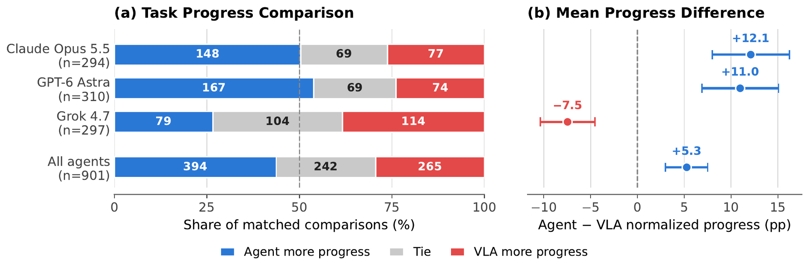
配对评测输入（Paired Evaluations） ：图从同一任务上的成对结果出发，共含 $N=901$ 次 Open Track 比较；每对分别输入前沿 AI 智能体（frontier AI model）与视觉-语言-动作策略（VLA policy）的归一化任务进度 $p_i^{A},p_i^{V}\in[0,100]\%$，从而消除不同任务量纲差异。胜负分类统计（Figure 1a） ：逐对计算 $\Delta_i=p_i^{A}-p_i^{V}$，并按 $\Delta_i>0$、$\Delta_i<0$、$\Delta_i=0$ 映射为“Agent makes more progress”“VLA makes more progress”和“Equal progress”三类。横向堆叠条展示各类占比，条内数字给出对应比较次数，输出整体胜负构成。平均进度差（Figure 1b） ：将配对差值聚合为 $\bar{\Delta}=\frac{1}{N}\sum_{i=1}^{N}\Delta_i$，单位为百分点（percentage points）。图中点估计刻画智能体相对 VLA 的平均优势：$\bar{\Delta}>0$ 偏向 Agent，$\bar{\Delta}<0$ 则偏向 VLA。不确定性估计（Bootstrap CI） ：对 $N$ 个配对样本进行有放回重采样，重复计算 $\bar{\Delta}^{(b)}$，以其经验分布的分位数构造 $95\%$ bootstrap 置信区间；误差线是否跨越零值线同时反映优势方向与统计稳定性。进入深读卡片查看完整方法与千问问答 →
3.02 VLA / 策略架构 π系列 VLA 2611.02777
论文提出REPAIR，将精密操作阶段的轻量级RL专家能力蒸馏进单一的流匹配VLA，部署时无需保留专家控制器或策略切换。该方法在关键状态下由专家生成多个动作候选，通过评论家价值评分加权构造监督分布，并结合专家辅助轨迹上的离线初始化与学生自主执行状态上的在线修复。六项真实机器人任务各评测30次，REPAIR均达到100%成功率，相比RL专家接管将成功轨迹的平均末端执行器急动度降低29.8%至67.5%；直接蒸馏10条专家轨迹则仅取得60%成功率（18/30）。
📐 查看论文原版模型结构图与讲解（Figure 1） 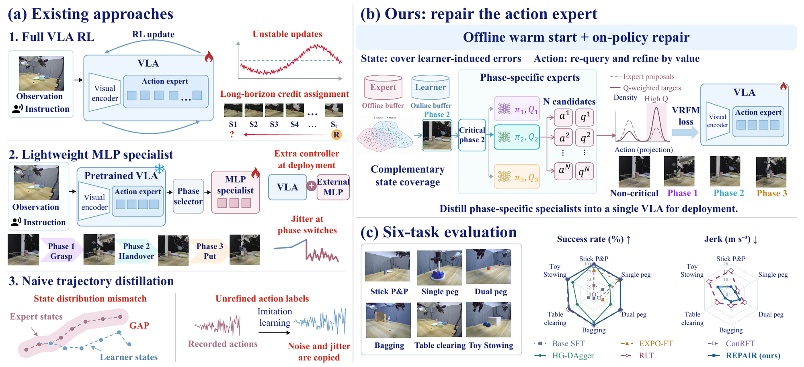
局部RL专家（Local RL Expertise） ：针对各任务训练局部策略 $\pi_{\mathrm{RL}}^{(k)}$ 及价值函数 $Q_{\mathrm{RL}}^{(k)}(s,a)$；专家把状态—动作轨迹与价值评估作为监督信号，而非在线执行时接管机器人。离线初始化（Offline Initialization） ：汇集专家轨迹 $\mathcal D_{\mathrm{off}}=\{(o_t,a_t,Q_t)\}$，以价值引导方式筛选或加权动作，训练视觉—语言—动作策略 $\pi_{\mathrm{VLA}}(a_t\mid o_t,\ell)$，获得可执行的初始通用策略。在线蒸馏与在策略修复（Online Distillation / On-policy Repair） ：VLA 独立采样 $a_t\sim\pi_{\mathrm{VLA}}$ 并产生在策略轨迹；局部专家仅通过 $Q_{\mathrm{RL}}(s_t,a_t)$ 评价失败或低价值行为，生成价值引导的修复监督，将纠正动作继续蒸馏回 VLA。单策略部署（Single-policy Deployment） ：修复后的 $\pi_{\mathrm{VLA}}$ 统一吸收离线专家知识与在线交互经验；部署阶段仅保留该策略，由图像观测 $o_t$ 和语言指令 $\ell$ 直接输出机器人动作 $a_t$，无需专家切换、路由或接管。进入深读卡片查看完整方法与千问问答 →
2.96 VLA / 策略架构 π系列 VLA 2611.02660
HeLM 是面向非马尔可夫机器人操作的分层 VLA 框架：基于 VLM 的高层策略通过事件检测与事件触发更新维护显式语言记忆，并将工作记忆和跨指令保留的情景记忆分开；低层 VLA 则执行高层生成的动作指令。论文在 10 个真实任务、56 个变体上评测，其中包含 5 个跨 episode 任务；相较最强基线，HeLM 将 episode 内子任务成功率提高 12.8 个百分点，并在组合泛化任务上达到 78% 的子任务成功率。长时程下，它相较关键帧视觉记忆基线最多节省 4.5 倍内存、运行速度提升 2.5 倍。
📐 查看论文原版模型结构图与讲解（Figure 1） 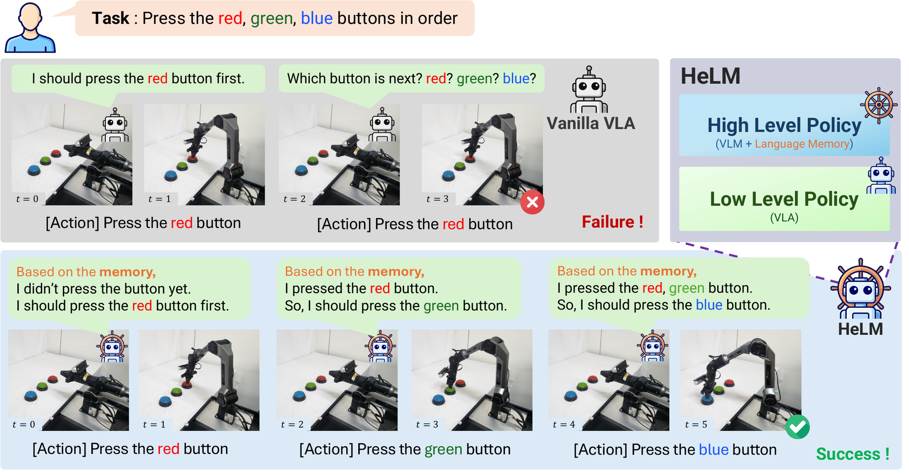
非马尔可夫任务输入 ：Figure 1 从环境观测与长程指令开始；当前视觉观测 $o_t$ 本身无法区分“红色按钮尚未按下”与“已经按下”，正确动作 $a_t$ 因而还依赖历史进度 $h_{1:t}$，即 $p(a_t\mid o_t,\ell)\neq p(a_t\mid o_t,\ell,h_{1:t})$。Vanilla VLA 基线 ：普通 Vision-Language-Action（VLA）策略直接将当前观测 $o_t$ 和语言指令 $\ell$ 映射为动作 $a_t=\pi_{\mathrm{VLA}}(o_t,\ell)$。按下红色按钮后，模型缺乏可持续的任务状态表示，重新看到相似场景便丢失进度并再次按下，暴露其马尔可夫式架构限制。Language Memory 进度存储 ：HeLM 在执行过程中把已完成事件写入语言记忆 $m_t$，例如“red button pressed”，并通过 $m_{t+1}=U(m_t,o_t,a_t)$ 持续更新。该显式记忆将不可由单帧观测恢复的历史压缩为可读、可检索的任务状态。HLP–LLP 分层执行 ：High-Level Planner（HLP）联合指令 $\ell$、当前观测 $o_t$ 与记忆 $m_t$ 生成下一子目标 $g_t$；Low-Level Policy（LLP）再执行 $a_t=\pi_{\mathrm{LLP}}(o_t,g_t)$。因此 HLP 能跳过已完成的红色按钮步骤，引导 LLP 转向后续操作并完成任务。进入深读卡片查看完整方法与千问问答 →
2.96 VLA / 策略架构 π系列 VLA 2611.03103
VLALagBench通过控制任务类型、目标速度、推理延迟、同步/异步执行模式和VLA策略，系统评估动态操作中的延迟敏感性，并覆盖MuJoCo、Isaac Sim及真实机器人实验。在目标速度为0.1 m/s时，100 ms推理延迟可使某任务成功率从71.5%降至40.5%，而另一任务仅从86.5%降至74.0%；异步执行可通过重叠推理与动作执行挽回部分性能，但会增加推理请求频率。论文还用少量校准数据建立成功率预测模型，在不同VLA策略上的RMSE为5.7%–7.8%，用于依据系统延迟和单机器人吞吐量选择执行模式与动作执行视界。
📐 查看论文原版模型结构图与讲解（Figure 16） 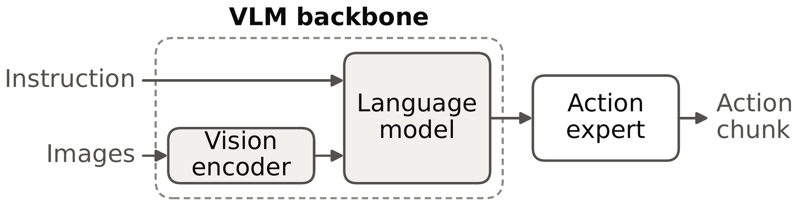
多模态输入（Multimodal Inputs） ：数据流由左向右展开，模型接收视觉观测 $I_t$ 与语言指令 $l$；视觉信息可表示为图像 token $x_t^{\mathrm{vis}}$，文本经分词后形成 $x^{\mathrm{lang}}$，共同描述当前环境状态与任务目标。视觉语言主干（VLM Backbone） ：VLM 对视觉、语言 token 进行跨模态融合与上下文建模，输出条件语义特征 $h_t=\mathrm{VLM}(I_t,l)$。该表征既编码物体、空间关系和场景状态，也保留指令中的任务约束，作为动作预测的统一条件。动作专家（Action Expert） ：Action Expert 读取 VLM 特征 $h_t$，将高层视觉语言知识映射到机器人控制空间，建模条件策略 $\pi_\theta(\mathbf a_{t:t+H-1}\mid h_t)$；其输出不是单步决策，而是长度为 $H$ 的连续动作序列。机器人动作输出（Robot Action Sequence） ：最终得到 $\mathbf a_{t:t+H-1}=[a_t,\ldots,a_{t+H-1}]$，其中每个 $a_i$ 可包含末端位姿、关节控制量及夹爪指令。该序列交由机器人执行，并在后续观测到来后滚动更新。进入深读卡片查看完整方法与千问问答 →
2.89 VLA / 策略架构 π系列 VLA 2611.01663
GatedVLA以Qwen-Drive-1.0-4B为视觉语言骨干，结合π0风格的32层流匹配动作专家，每0.5秒重规划并预测未来2.5秒、25步的加速度与曲率控制；其视觉门控以20%的软掩码预算筛选动作专家跨注意力中的图像证据。视觉掩码将150个场景、每场景两次闭环评测的平均分从0.479提升至0.517，但差异置信区间为[-0.018,0.093]、p=0.21，尚无统计显著性；部署基于RT-DETRv2的规则式AEB后，得分进一步升至0.599，平均责任碰撞场景数从34降至11。开放环中掩码模型总体误差与基线接近，但左转FDE由1.213米降至1.100米、漏检率由0.200降至0.150；AEB阈值在同一批评测场景上调优，因此其泛化收益可能偏乐观。
📐 查看论文原版模型结构图与讲解（Figure 1） 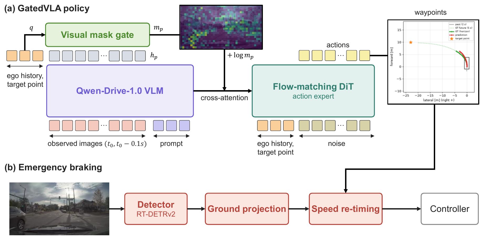
多模态输入与 VLM 编码 ：系统从左向右接收相机图像 $I$ 与语言指令 $l$；视觉语言模型（VLM）将图像编码为 image tokens $Z_I$，并结合文本语义形成供策略专家读取的多模态上下文。GatedVLA 端到端策略 ：策略专家通过 cross-attention 查询 VLM 特征；视觉掩码 $m_p$ 作为门控偏置注入注意力，使专家更关注与当前规划相关的图像 token、抑制无关区域。该 VLM—专家链路联合端到端训练，并输出预测航迹点序列 $\hat{\mathbf P}=\{\hat{\mathbf p}_k\}_{k=1}^{H}$。部署期目标检测 ：预训练 detector 仅在推理时接入，独立识别车辆、行人等障碍物并产生检测结果；它不参与 GatedVLA 的训练，也不直接改写策略网络参数，而是为后续安全约束提供环境状态。规则式 AEB 与轨迹重定时 ：rule-based AEB 根据检测结果评估碰撞风险，对 $\hat{\mathbf P}$ 沿既定空间路径重新分配时间或速度，即保持航迹几何形状、调整 waypoint 的到达时刻；必要时减速或制动，得到安全执行轨迹 $\hat{\mathbf P}'$。进入深读卡片查看完整方法与千问问答 →
导航 / VLN / SLAM · 6
3.99 导航 / VLN / SLAM 导航 SLAM 2611.02051
UniGS-SLAM 是一个仅使用单目 RGB 输入的高斯语义 SLAM 框架，利用基础模型几何先验、锚点对齐、置信度感知深度融合和长时域位姿引导增强跟踪与重建。该方法将开放词汇语义解耦到带观测溯源的独立稀疏体素地图中，使历史语义证据能随位姿或深度更新而修正，并以融合语义反向指导高斯浮点过滤和局部表面细化。在 Replica、ScanNet 和 KITTI-360 上，其跟踪、渲染及几何重建性能领先代表性 RGB-only 方法，并在 Replica 和 ScanNet 上实现较强的开放集语义建图；重建速度比所比较的最快语义 SLAM 基线提升 2.37 倍。
📐 查看论文原版模型结构图与讲解（Figure 1） 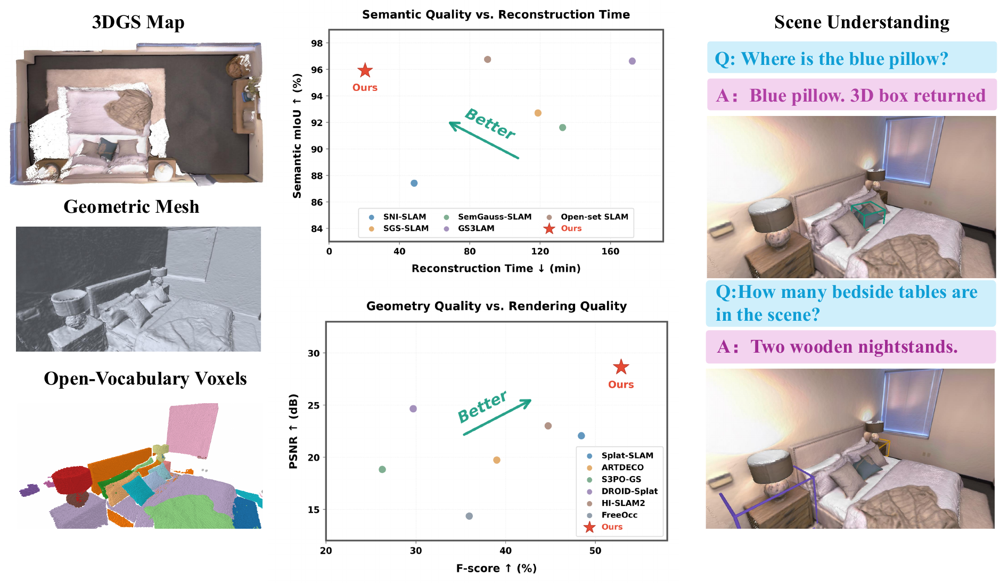
输入与几何先验（Foundation Geometry Priors） ：从标定单目 RGB 序列 $\{I_t\}$ 出发，将近期跟踪关键帧与可靠历史视图组成预测窗口；依据位姿 $(R_i^F,\mathbf t_i^F)$ 计算平移—旋转距离 $d(i,j)$，选择兼具重叠与几何多样性的上下文。单目高斯 SLAM（Geometry-Enhanced Monocular Gaussian SLAM） ：通过锚点对齐消除跨窗口尺度与位姿不一致，并执行置信度感知深度融合和长时程位姿引导，联合优化相机轨迹及 Gaussian Map，重建场景几何与 RGB 外观。开放词汇语义融合（Independent Sparse Voxel Map） ：在已估计几何上，将各帧开放词汇语义观测投影并融合至独立稀疏体素地图；当几何或位姿更新时重新关联观测、修正历史语义证据，避免语义直接绑定高斯造成的累积误差。语义反馈与三维理解（Semantic Feedback） ：体素语义地图反向指导 Gaussian floater filtering 与 surface refinement，剔除漂浮高斯并细化表面；最终同时输出高质量几何、开放词汇三维语义及相机轨迹，支持 3D scene understanding。进入深读卡片查看完整方法与千问问答 →
3.98 导航 / VLN / SLAM 导航 SLAM 2611.01937
Spade-SLAM 是一种基于 DROID-SLAM 的稠密自监督视觉 SLAM 框架，将亮度对齐的稠密光度损失与稀疏特征匹配的重投影损失结合，以几何锚点稳定优化并抑制歧义区域的漂移。该方法通过可微稠密束调整联合估计相机位姿、稠密深度和未知焦距，无需真实位姿或深度标注。仅使用覆盖不到约 1% 图像像素的高置信对应点，便显著优于已有自监督基线，并在零样本相机跟踪和稠密三维重建中达到接近全监督系统的性能。
📐 查看论文原版模型结构图与讲解（Figure 1） 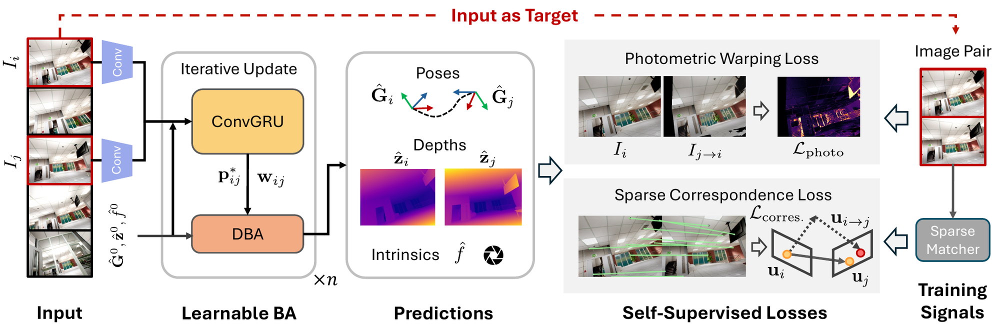
输入与帧图构建（Frame Graph） ：输入未标定 RGB 视频 $\mathcal{V}=\{I_i\in\mathbb{R}^{H\times W\times3}\}_{i=1}^{N}$，按共视关系构建 $\mathcal{G}=(\mathcal{V},\mathcal{E})$；每条边 $(i,j)$ 对应一对待联合更新的图像，并维护位姿 $\hat{\mathbf G}_i\in SE(3)$、低分辨率深度 $\hat{\mathbf z}_i$ 与共享焦距 $f$。相关性更新（RAFT-style ConvGRU） ：对边 $(i,j)$ 提取图像相关特征，循环更新算子预测稠密对应修正 $\boldsymbol{\delta}_{ij}$ 及置信权重 $\mathbf w_{ij}$。当前几何首先产生诱导投影 $\mathbf p_{ij}=\Pi_f\!\left(\hat{\mathbf G}_{ij}\circ\Pi_f^{-1}(\mathbf p_i,\hat{\mathbf z}_i)\right)$，再由修正量给出优化目标 $\mathbf p_{ij}+\boldsymbol{\delta}_{ij}$。可微分联合优化（Differentiable Bundle Adjustment） ：以加权重投影残差为约束，在整张帧图上迭代更新相机位姿、深度与共享焦距，即联合求解 $\{\mathbf G_i\}$、$\{\mathbf z_i\}$ 和 $f$；稀疏高置信匹配仅覆盖约 $1\%$ 像素，却为病态的纯光度优化提供稳定几何锚点。自监督输出与损失 ：学习式凸上采样将 $\hat{\mathbf z}_i\in\mathbb{R}^{H/8\times W/8}$ 恢复为稠密深度 $\hat{\mathbf Z}_i\in\mathbb{R}^{H\times W}$。训练端联合采用 photometric warping 光度一致性与 sparse correspondence reprojection 稀疏重投影损失，无需真实位姿或深度标注。进入深读卡片查看完整方法与千问问答 →
3.36 导航 / VLN / SLAM 导航 其他 2611.01844
OpenNWM是一种通用导航世界模型，通过潜在动作预训练从无动作标注视频中学习通用导航潜在动作（UNLA），再利用动作条件后训练将其与真实物理运动对齐，以支持未来视觉预测与规划。作者构建了NavAnywhere数据集，包含来自15个异构来源的1750万条视觉观测，覆盖地面机器人、人类和无人机及五类场景。实验表明，该方法在域内与域外视觉预测、自回归滚动和真实动作规划评测中取得先进性能，并提升了下游导航表现。
📐 查看论文原版模型结构图与讲解（Figure 1） 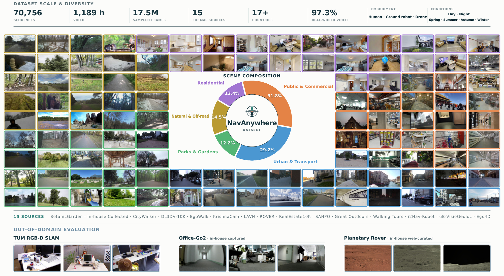
图文对应关系 ：所给 Figure 1 题注描述的是 NavAnywhere 及其互补域外评测集，属于数据集总览；而方法片段对应的结构图标题为 “Framework of OpenNWM”。两者并非同一幅图，无法据此准确还原 Figure 1 的模型数据流。异构数据输入 ：OpenNWM 将视觉经验组织为 $\mathcal D=\{(\mathbf x_i,\mathbf y_i,c_i)\}_{i=1}^{N}$；其中 $\mathbf x_i=(x_{i,0},\ldots,x_{i,T_i})$，$\mathbf y_i$ 为可选相机位姿，$c_i$ 标记数据源、具身形态与采样率，无动作视频满足 $\mathbf y_i=\varnothing$。通用导航潜动作 ：潜动作编码器 $q_\phi$ 根据首末视觉状态推断转移变量 $z_{\tau\rightarrow m}\sim q_\phi(\cdot\mid x_\tau,x_m)$，以连续紧凑表征分离并保留可控运动语义，无需显式动作标签。未来状态生成 ：以最近 $h$ 帧状态 $\mathbf s_{\tau-h+1:\tau}$、潜动作 $z_{\tau:m}$ 和预测跨度 $k$ 为条件，扩散分布 $p_\theta$ 预测 $s_m$，其中 $m=\tau+k$；训练最大化 $\mathbb E_{q_\phi}[\log p_\theta(s_m\mid\mathbf s_{\tau-h+1:\tau},z_{\tau:m},k)]$。进入深读卡片查看完整方法与千问问答 →
3.18 导航 / VLN / SLAM 导航 目标导航 2611.03498
SNAP提出一种基于强化学习的语义人群导航策略，将地形语义与动态障碍统一编码到机器人中心的语义BEV地图中，并以PPO非对称演员-评论家架构学习速度指令，无需显式估计或跟踪行人状态。该方法在500回合仿真评测中全面优于SARL、DRL-VO和ViPlanner：行人速度0.5 m/s时成功率为93.2%，20个动态障碍时为81.8%，动态语义场景中为82.6%。策略以10 Hz零样本部署到ANYmal-D，在真实拥挤场景中能够避让反复横穿的行人、遵循安全地形并无碰撞到达目标。
📐 查看论文原版模型结构图与讲解（Figure 2） 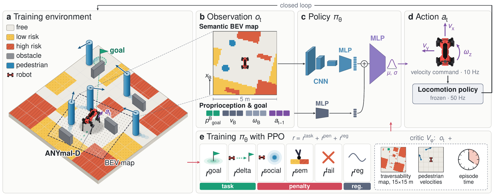
环境生成与训练场景（a） ：在程序化生成环境中构造具有不同风险等级的语义地形、静态障碍物及由社会力模型（SFM）驱动的行人，形成动态导航交互；环境状态记为 $s_t$，并提供碰撞、地形风险与任务进度等训练信号。Actor 多模态观测（b） ：策略输入由机器人中心语义鸟瞰图（semantic BEV map）$M_t$、本体感知向量 $p_t$ 与目标相对向量 $g_t$ 组成。BEV 显式编码周围地形语义、风险和障碍分布，后两者分别描述机器人运动状态及目标方向/距离。特征编码与动作生成（c–d） ：CNN 将 $M_t$ 编码为视觉特征，MLP 分别处理 $p_t$、$g_t$，融合后送入 Gaussian action head，输出 $\pi_\theta(a_t|o_t)=\mathcal N(\mu_t,\Sigma_t)$；采样动作 $a_t$ 表示速度指令，再由冻结的 locomotion policy 跟踪执行，实现高层导航与低层运动解耦。PPO 与非对称 Critic（e） ：Actor 仅使用可部署观测 $o_t=(M_t,p_t,g_t)$，Critic 则额外接收表中列出的特权观测以估计 $V_\phi(s_t)$。结合表中奖励通过 PPO 优化 $\pi_\theta$，特权信息只辅助训练，不进入部署阶段。进入深读卡片查看完整方法与千问问答 →
3.14 导航 / VLN / SLAM 导航 定位与建图 2611.01558
论文提出面向文本辅助事件流视觉地点识别的MSTOT-EPR框架，利用跨模态最优传输对齐事件视觉特征与文本语义，并通过跨模态瓶颈模块完成双模态融合。其多尺度空间最优传输与帧间时间最优传输分别建模跨尺度空间对应关系和事件序列的时间演化，最终生成用于地点检索的全局描述符。该方法在NYC-Event-VPR和EPRBench两个基准上进行了验证，但所给节选未披露具体数值指标。
📐 查看论文原版模型结构图与讲解（Figure 1） 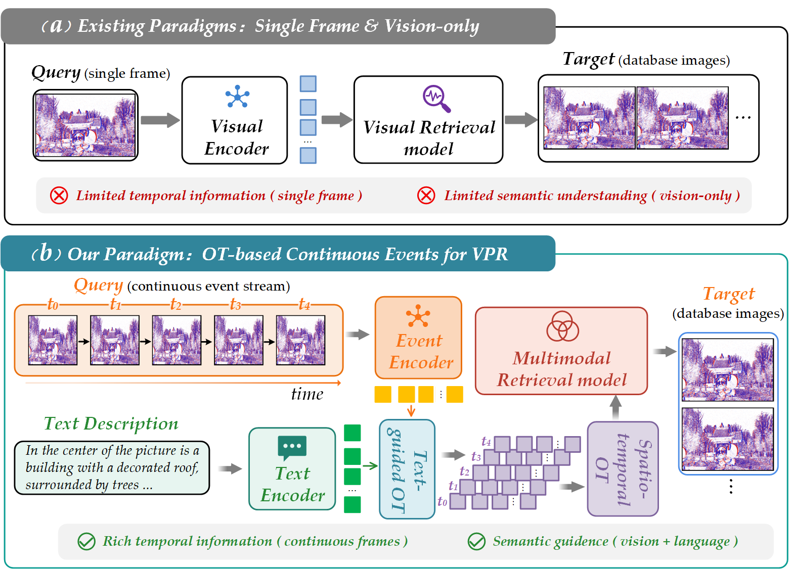
传统视觉定位（Conventional Vision-only VPR） ：查询图像 $I_q\in\mathbb{R}^{H\times W\times3}$ 与数据库参考图像 $\{I_r^j\}$ 分别经共享视觉编码器 $f_I$，得到全局描述子 $z_q$、$z_r^j\in\mathbb{R}^{D}$；通过余弦相似度 $s_j=\frac{z_q^\top z_r^j}{\|z_q\|\|z_r^j\|}$ 检索最相似地点。事件输入（Event） ：本文以异步事件流 $\mathcal{E}=\{(x_i,y_i,t_i,p_i)\}_{i=1}^{N}$ 替代常规查询帧，其中 $(x_i,y_i)$、$t_i$ 与 $p_i\in\{-1,+1\}$ 分别表示位置、时间戳和极性；事件编码器 $f_E$ 将稀疏时空变化聚合为地点特征 $z_E$。文本地点表征（Text） ：参考侧由地点文本描述 $T=(w_1,\ldots,w_L)$ 输入文本编码器 $f_T$，生成语义嵌入 $z_T$；该表示不依赖参考图像外观，而以场景实体、布局及属性构成可检索的地点语义库。事件—文本匹配（Event-text VPR） ：模型将 $z_E$ 与候选文本特征 $\{z_T^j\}$ 投影至共享嵌入空间，计算跨模态相似度 $s_j=\operatorname{sim}(z_E,z_T^j)$，并输出 $\hat{j}=\arg\max_j s_j$，实现从事件观测到文本地点身份的直接检索。进入深读卡片查看完整方法与千问问答 →
2.54 导航 / VLN / SLAM 导航 SLAM 2611.02857
Solv3R 将多视图三维重建建模为可持续迭代的学习型求解过程，以不依赖迭代次数的共享 Transformer 更新算子联合优化相机位姿、深度图和射线图。模型通过稳定性、纠错性与延续性训练，使已收敛状态在继续迭代时保持稳定，并能修正扰动状态、增量加入新视图；已求解视图还可缓存为可复用的键值上下文。实验以相机旋转误差、深度及重建精度等为主要指标，显示其在离线与增量重建、重定位和流式重建中达到有竞争力的性能，但所给节选未提供具体数值。
📐 查看论文原版模型结构图与讲解（Figure 5） 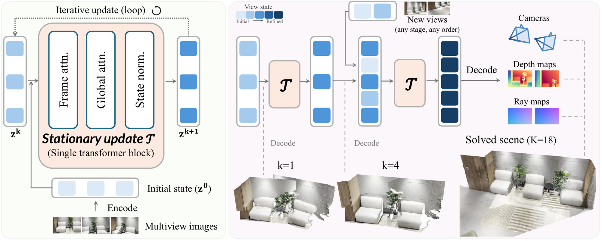
输入编码与状态初始化 ：多视图图像 $\mathcal I=\{I_i\}_{i=1}^{N}$ 经共享 Image Encoder 编码为逐视图初始状态 $\mathbf z^0=\{\mathbf z_i^0\}$；该状态既作为迭代起点，也在后续更新中持续执行 Initial-state Injection（初始状态注入），保留原始视觉证据。Stationary Transformer Block ：共享且无步数条件的固定算子对当前状态 $\mathbf z^k$ 反复更新。Frame-wise Attention 在单帧 token 内建模局部结构，Global Attention 在不同视图间交换信息并施加几何一致性；随后融合 $\mathbf z^0$，经 State Normalization 稳定状态尺度，形成 $\mathbf z^{k+1}=F_\theta(\mathbf z^k,\mathbf z^0)$，不依赖迭代索引 $k$。跨 Solver Call 持续求解 ：右图中同一算子可跨多次 solver call 继续细化重建，而非在固定层数后终止。新视图可在任意阶段编码并加入当前多视图状态，与已迭代不同次数的旧视图联合更新，实现可扩展、异步的多视图融合。任意时刻几何解码 ：每次 solver call 后，当前状态均可送入任务解码头，分别输出 Camera Poses、Depth Maps 与 Ray Maps；因此相机、深度及像素射线表示可随迭代持续修正，并共同确定场景三维几何。进入深读卡片查看完整方法与千问问答 →
灵巧操作 / 接触 · 3
3.86 灵巧操作 / 接触 组合泛化 交互表示/条件接口 2611.02968
ReContact 从人类视频中构建以物体为中心的接触计划，按阶段显式表示机器人—物体接触对、锚点、施力方向以及粘连/滑动模式，并用这些先验稳定遮挡下的物体重建、约束全身动作重定向和训练冻结跟踪器之上的残差策略。在大腿支撑重抓任务中，它以 83.5±5.2% 的成功率形成指定的双掌底托，而最佳适配基线仅为 0.16%；将一个示范重求解为 247 条不同放置参考后，管状物转移成功率由 20.4% 提升至 97.8%。系统还在真实 Unitree G1 上执行了 7 个富接触操作任务和 2 个移动操作任务。
📐 查看论文原版模型结构图与讲解（Figure 1） 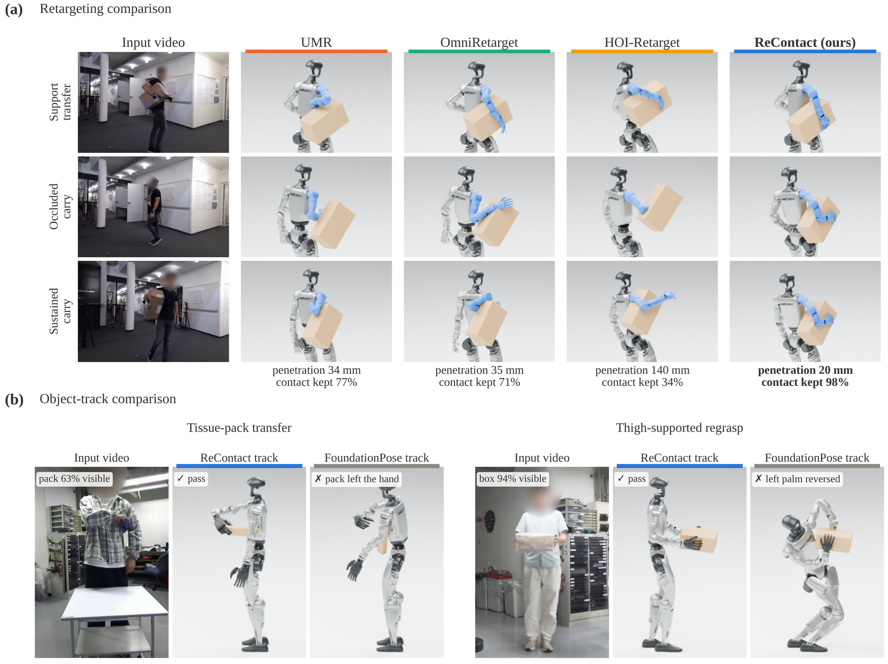
输入与对照设置（Shared References） ：图(a)以同一人体动作序列和物体轨迹为输入，在中型箱搬运任务中并列比较不同重定向方法；因此输出差异主要反映机器人—物体接触建模能力，而非视觉轨迹差异。物体中心接触计划（Object-Centric Contact Plan） ：ReContact将动作组织为 $\mathcal P=\{I_k,\mathcal C_k,\zeta_k,\mathcal H_k\}_{k=1}^{K}$。每阶段 $I_k=[s_k,e_k]$ 指定活动接触对 $\mathcal C_k$ 与承载表面 $\zeta_k$；接触 $c$ 绑定机器人链节 $\ell_c$ 上的点/法向 $(\mathbf p_c^\ell,\mathbf m_c^\ell)$ 和物体坐标系中的锚点/法向 $(\mathbf a_c(\tau),\mathbf n_c(\tau))$，按 $-\mathbf n_c$ 施压，并以 $\sigma_c\in\{\mathrm{stick},\mathrm{slide}\}$ 区分粘着或滑动。接触保持式重定向（ReContact Retargeting） ：在归一化阶段进度 $\tau=(t-s_k)/(e_k-s_k)$ 上，系统将全身姿态与接触关系解耦后再联合生成机器人—物体参考；稳定区间 $\mathcal H_k$ 排除接触建立与释放，使箱体搬运中的手—箱支撑关系在形态映射后仍被保留。物体轨迹消融（Object-Track Comparison） ：图(b)固定同一 ReContact 流程，仅替换纸巾包转移及大腿支撑再抓取任务的物体轨迹，比较其输出接触链；结果强调轨迹质量会直接影响手部转移、腿部承载与再抓取阶段的锚点连续性。进入深读卡片查看完整方法与千问问答 →
3.53 灵巧操作 / 接触 组合泛化 从视频学物体运动/affordance 2611.02930
PointPilot把夹爪及其局部刚性耦合的物体部件统一表示为任务相关对象，端到端完成子任务规划、语言引导的3D定位和点流预测，再由无需学习的几何适配器将点流转换为末端位姿，实现闭环执行。它在共享3D坐标系中联合训练异构机器人示教，一个模型同时支持单臂与双臂、平行夹爪与灵巧手，并能零样本部署到未见过的机器人本体。论文与表中7种既有方法对比，PointPilot是唯一同时满足零样本跨本体迁移、无需独立抓取模块、无需学习式动作头、支持单臂和支持双臂这5项能力的方法。
📐 查看论文原版模型结构图与讲解（Figure 1） 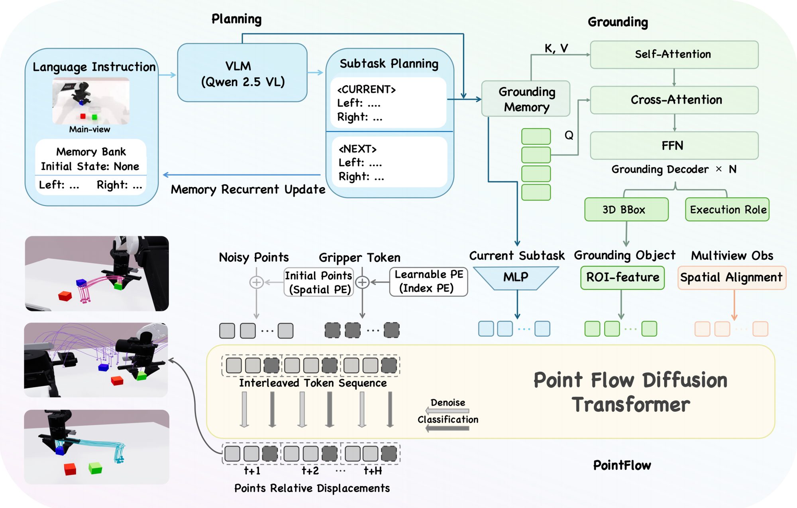
(a) Planning／规划 ：输入当前多视角观测与历史记忆 $M_t$，memory-conditioned VLM 根据任务指令预测当前子任务 $s_t$ 及下一子任务 $s_{t+1}$；该高层语义序列既保持长时任务进度，也为后续感知限定目标范围。(b) Grounding／三维定位 ：Task-conditioned 3D Grounding 将 $s_t$ 与场景点云 $P_t\in\mathbb{R}^{N\times3}$ 联合编码，定位任务相关物体，并为其分配执行角色；输出带角色标签的目标点集 $P_t^{\mathrm{obj}}$，从复杂场景中显式分离待操作对象与交互参照物。(c) PointFlow／动作生成与执行 ：首先对多视角观测进行几何对齐，融合为统一坐标系下的三维点特征；Point DiT 以目标点集、子任务条件和扩散时刻 $t$ 为输入，联合预测相对三维点流 $\Delta P_t\in\mathbb{R}^{N\times3}$ 与夹爪状态 $g_t$。随后，learning-free Geometry Adapter 将物体运动 $\Delta P_t$ 转换为末端执行器位姿轨迹 $\{\mathbf{T}_{t+k}\in\mathrm{SE}(3)\}$，并通过新观测持续重规划，实现闭环操作。进入深读卡片查看完整方法与千问问答 →
3.49 灵巧操作 / 接触 组合泛化 交互表示/条件接口 2611.02171
GoalDex 用目标图像直接指定物体期望朝向，以当前单目 RGB、目标图像和本体感觉为输入，通过特权状态教师蒸馏、循环时序记忆及隐状态重建辅助损失，端到端输出手部关节目标，无需显式物体位姿估计或规范物体坐标系。该方法在仿真中扩展到 25 个不同物体，并将同一策略零样本迁移到 5 个真实物体；100 次硬件实验的成功率为 80%，显著高于最强位姿式基线的 27%。
📐 查看论文原版模型结构图与讲解（Figure 1） 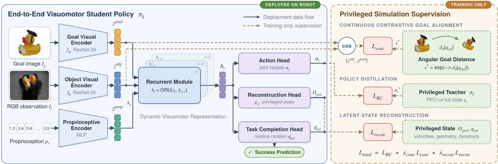
阶段 I／特权教师学习（Privileged Teacher Learning） ：在目标条件 MDP $\mathcal{M}_{priv}$ 中，教师策略 $\pi_T(a_t\mid s_t,g_{\mathrm{pose}})$ 读取完整仿真状态 $s_t$ 与 $SO(3)$ 姿态目标，输出关节位置目标 $a_t$，为学生提供动作监督及特权表征信号。视觉编码与多模态融合（Visual Encoding & Fusion） ：当前 RGB 图像 $I_t$ 和目标图像 $I_g$ 经视觉编码器得到表征 $v_t,v_g$；二者与含关节状态、历史动作的本体感知向量 $p_t$ 融合，形成联合特征 $x_t=\mathrm{Fuse}(v_t,v_g,p_t)$，直接在图像空间刻画当前—目标差异。循环学生策略（Recurrent Policy） ：循环网络以 $(x_t,h_{t-1})$ 更新时序隐状态 $h_t$，在遮挡、模糊及未知动力学下积累历史证据；学生策略 $\pi_S(a_t\mid I_t,I_g,p_t,h_{t-1})$ 预测关节位置目标，并通过蒸馏损失逼近教师动作。辅助表征约束（Auxiliary Objectives） ：重建分支由潜变量 $z_t$ 恢复特权仿真信息，连续对比目标则依据状态或姿态距离约束样本相似度，使相近状态表征接近、远离状态分离；总目标可写为 $\mathcal{L}=\mathcal{L}_{\mathrm{distill}}+\lambda_{\mathrm{rec}}\mathcal{L}_{\mathrm{rec}}+\lambda_{\mathrm{con}}\mathcal{L}_{\mathrm{con}}$。进入深读卡片查看完整方法与千问问答 →
青稞速报 / 开源模型发布 · 16
3.00 青稞速报 / 开源模型发布 青稞速报 开源发布 WAM 机器人 青稞
机器人实时控制面临一对天然矛盾：要判断物体如何运动、任务进行到哪一步，需要足够长的视觉历史；但一旦处理历史，动作就会变慢。更关键的是，给模型历史，它不一定会用。 10月27日，青稞Talk 162 期邀请到 Long-WAM 第一作者、香港大学 ECE 博士生（NVIDIA Research Eff
3.00 青稞速报 / 开源模型发布 青稞速报 开源发布 EWAM 世界模型 VLA 青稞
作者：王昊,中山大学博士 01. 倒一杯水之前，大脑先做了什么？ 倒一杯水，看起来只是一个动作。但手还没伸出去，大脑已经忙了一轮：先认出杯子和水壶在哪，再预想手怎么移过去、水会怎么流进杯子，最后才决定手腕倾斜多少、什么时候停。 心理学家 Kenneth Craik 在 1943 年就写过类似的想法：
3.00 青稞速报 / 开源模型发布 青稞速报 开源发布 EmbodiedRSI 机器人 具身 青稞
近年来，机器人学习主要依赖模仿学习：用大量专家示范数据训练策略。但换个任务、变个环境，往往就要重新采集数据、重新训练——成本高，扩展性也差。 更麻烦的是，机器人基础模型在物体位置或任务指令变化时，性能会明显下降；想要进一步改进，又需要大量遥操作数据做后训练。 那么问题来了：能不能让具身智能体像人一样
3.00 青稞速报 / 开源模型发布 青稞速报 开源发布 机器人 具身 青稞
作者：岳博，在香港中文大学（深圳）在读博士 青稞社区为科研人员提供成果宣传支持，如有优秀研究成果分享推广，欢迎投稿联系：aiFreeCode 谈到具身智能，我们很容易想到更强的视觉语言模型、更多的机器人数据，以及更好的控制策略。但有一个问题往往被放在了训练之外：如果机器人的身体本身不适合任务，再聪明
3.00 青稞速报 / 开源模型发布 青稞速报 开源发布 机器人 具身 青稞
具身智能真正的壁垒在数据。 如果类比大模型的发展，大家都会谈 Scaling Law：模型、算力和数据共同决定模型能力。在机器人领域，也已经有研究观察到了类似的 scaling 趋势——随着数据、模型规模和算力增加，机器人策略的性能也会持续提升。 但问题在于，这三件事情的可扩展性并不对称。 模型架构
3.00 青稞速报 / 开源模型发布 青稞速报 开源发布 GroundingPI 基座模型 VLA 青稞
从VLA到WAM，主流的模型都在通用的基座模型作为base model去改造，但通用基座模型真的靠谱吗？ 所谓的具身基模又真的训对了吗？ 当一个基座模型被改造成 VLA、承担 System 1 的执行角色时，最需要的究竟是什么能力或数据？ 人类整理拥挤的桌面，需要先找到杯子和把手，再决定怎样抓取——
3.00 青稞速报 / 开源模型发布 青稞速报 开源发布 GroundingPI 机器人 具身 青稞
先说个场景。 你让机器人去桌上拿那个蓝色杯子，它答得挺快：好，蓝色杯子。 然后手伸过去，抓了个空。 不是它不认识。它认识，甚至能告诉你杯子里有没有水。但它指不准——杯柄在左边还是右边，杯口离桌沿还有几厘米。就差这么一点，手就空了。 第一反应往往是“手”的问题：控制不够精细、动作不够稳。但把这两篇论文
3.00 青稞速报 / 开源模型发布 青稞速报 开源发布 WAM 机器人 青稞
机器人要做到实时控制，需要足够长的视觉历史，来判断物体怎么动、任务进行到了哪一步；但只要开始处理历史，动作就会变慢——这是一对天然矛盾。 更微妙的问题在于：给模型历史，它就会用吗？ 来自 NVIDIA、MIT、香港大学与 UCSD 的团队提出 Long-WAM——一个面向实时控制约束、系统性扩展因果
3.00 青稞速报 / 开源模型发布 青稞速报 开源发布 世界模型 青稞
让模型继续变强，眼下最缺的往往不是想法，而是反馈：代码修复要跑测试，化学反应要上实验台，免疫研究要做湿实验。每一次执行都是真实成本。 反馈一贵，问题就从“怎么改”变成“先试哪个”。同一个 coder 给出四个候选补丁，同一轮里只执行其中一个；同一批反应条件，实验台只给 40 次机会。选错一次，机会就
3.00 青稞速报 / 开源模型发布 青稞速报 开源发布 青稞
转眼间已经距离Astra横空出世过去了好几个月了，这段时间也出了非常多的RSI、Harness系统刷爆了仿真，特别是之前被誉为珠峰的Robodojo，平均一周榜首换两三个，还基本上都是Agentic系统。 在这个狂欢下，我们不禁注意到，仍然有若干问题是agent无法解决的，以及一些是即使到GPT7、
3.00 青稞速报 / 开源模型发布 青稞速报 开源发布 机器人 微调 权重 青稞
作者：Kaichen Zhou 青稞社区为科研人员提供成果宣传支持，如有优秀研究成果分享推广，欢迎投稿联系：aiFreeCode 每任务 24 条参考轨迹，只引导一个内部特征，动作模型权重保持冻结。 在三项真实机器人任务上，SteerAct 将平均成功率从 31.1% 提升至 52.2%：增加 21
3.00 青稞速报 / 开源模型发布 青稞速报 开源发布 机器人 青稞
作者：Kaichen Zhou 青稞社区为科研人员提供成果宣传支持，如有优秀研究成果分享推广，欢迎投稿联系：aiFreeCode 每任务 30 条遥操作示范，让触觉在视觉更新之间及时修正动作。 在四项真实机器人任务上，T-WLA 将平均成功率从 17.0% 提升至 50.0%，增加 33 个百分点。
3.00 青稞速报 / 开源模型发布 青稞速报 开源发布 World Action UNITAS WAM 青稞
只有 1.7B 参数，却在双臂操作基准上超过 6B、8B 模型；四个操作基准，全部拿下论文对比方法中的最高整体成功率。 世界动作模型（World Action Model，WAM）的竞争，迎来了一条值得关注的新路线。 当不少研究还在借助预训练视频模型学习动作与未来画面时，香港中文大学（深圳）团队推出
3.00 青稞速报 / 开源模型发布 青稞速报 开源发布 GitHub 机器人 具身 青稞
作者: Baiqiao Yin https://yyyybq.github.io/blog/phd-blind-man-and-cat/ GPT-6 正在操控一台双臂机器人插花。握着花的那只手臂，腕部相机看不见瓶口；于是它把空着的另一只手臂挪过去，让那只手臂的相机对准瓶口，再把花插进去。 没有人教过
3.00 青稞速报 / 开源模型发布 青稞速报 开源发布 世界模型 机器人 具身 青稞
机器人数据不够用，是个老问题。 更麻烦的是换个本体就不好用：同一段“把杯子放进盒子”的视频，夹爪录的换到灵巧手上，手型和接触全变了；机械臂、人形机器人、夹爪、灵巧手，动作空间对不上，一批数据往往只能喂一个本体。另一边，人类的第一人称视频多到用不完，可它和机器人之间隔着一层本体差异。 来自南洋理工大学
3.00 青稞速报 / 开源模型发布 青稞速报 开源发布 机器人 开源 权重 青稞
正文 在 RoboDojo 上，Qwen3.8-Flash-Next 通过直接操控机器人的方式拿到 31.39 分。这个分数，比 GPT-6 Astra 此前榜单上公开的 28.97 分更高。Qwen 以约 6.6% 的成本，跑赢 Astra 公开成绩。 一个开源、权重可以下载、单局调用成本只有 1
其他 · 1
3.19 其他 π系列 其他 2611.01404
本文并非提出新机器人策略，而是刻画并优化智能体机器人集群的双层推理服务：基于80个LIBERO-PRO回合（1,862次脑模型调用、1,582个VLA推理块），在H800上剖析π0.5动作层，并用Qwen3.6-27B与vLLM回放持续增长的脑模型上下文。上下文最长达215k token；在0.25秒动作块截止期和1%饥饿率目标下，单张VLA GPU仅支持1台机器人，而截止期放宽至1.0秒时容量至少为32台。持续负载中，并发从20增至32台使脑服务吞吐从约2.4降至0.6请求/秒；通过静态活跃回合准入上限，吞吐恢复至2.24–2.25请求/秒，完整轨迹处理能力由1.30提升至5.00–5.55回合/分钟。
📐 查看论文原版模型结构图与讲解（Figure 2） 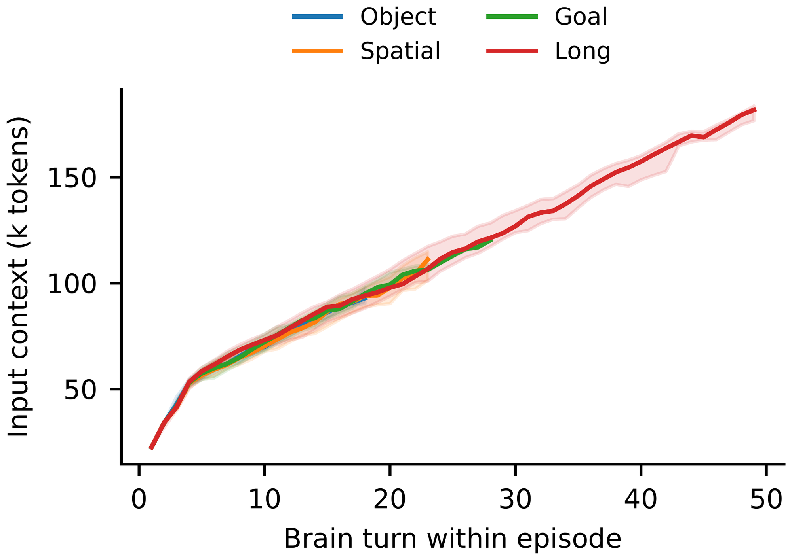
机器人程序（Robot program） ：左侧程序执行感知、工具调用与环境交互；在第 $i$ 轮形成上下文 token 序列 $C_i$，并依据工具决策分别触发脑服务或 $\pi_{0.5}$ VLA 服务，构成具有严格先后依赖的闭环请求流。脑服务（Brain serving） ：上行“Context request”携带持续增长的前缀，满足 $C_{i-1}\prec C_i$；服务端复用前缀对应的 KV-cache，并生成长度为 $o_i$ 的“Tool decision”返回程序。实验以保持长度与精确前缀关系的随机 token 在 vLLM 上重放，Qwen3.6-27B 仅代理计算及缓存成本。VLA 服务（VLA serving） ：下行“VLA tool call”将视觉观测与任务指令送入 $\pi_{0.5}$，输出动作块 $A_t=(a_t,\ldots,a_{t+H-1})$，再以“Action result”回传。其采用 FCFS 批处理，每台机器人至多保留一个未完成请求，并可预取动作块以降低控制饥饿。独立 GPU 池与回放控制 ：Brain 与 VLA 位于分别剖析的 GPU 服务池；脑请求完成后等待原轨迹环境间隔 $\Delta t_i$ 再发下一轮。episode 边界的准入上限 $K$ 约束活跃程序数，从而抑制增长 KV 工作集引发的缓存抖动。进入深读卡片查看完整方法与千问问答 →